Overview
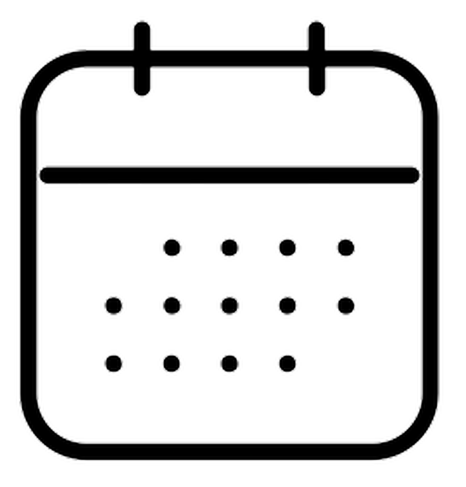The series is about a 10-year-old boy named Ben Tennyson who gets a watch-style alien device called the "Omnitrix". Attached to his wrist, it allows him to transform into 10 different alien creatures with different abilities, allowing him to fight evil from Earth and space with his cousin Gwen and grandfather Max.
Ben 10, later known as Ben 10 Classic or Classic Ben 10, is an American animated series created by the group Man of Action and produced by Cartoon Network Studios. The pilot episode And Then There Were 10, aired on December 27, 2005, as part of a sneak peek of Cartoon Network's Saturday morning lineup.
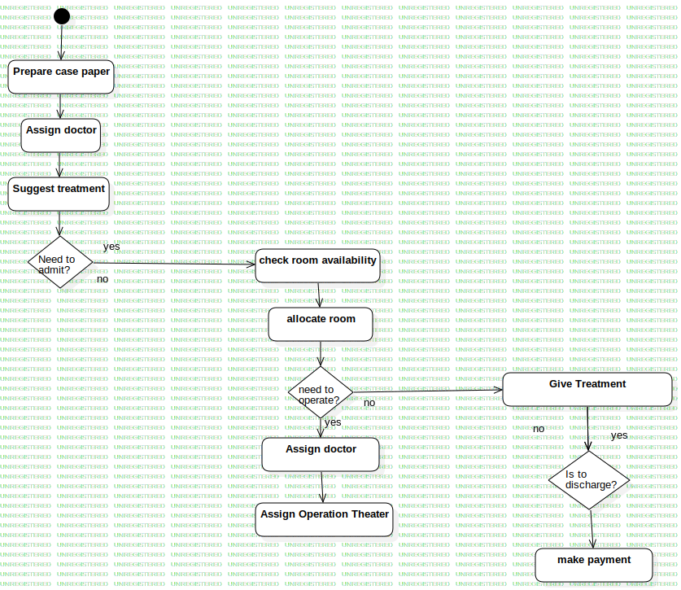 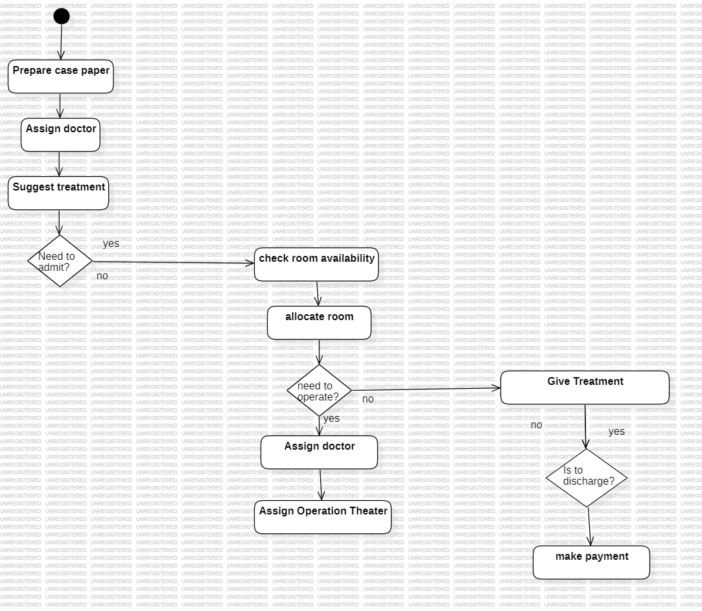 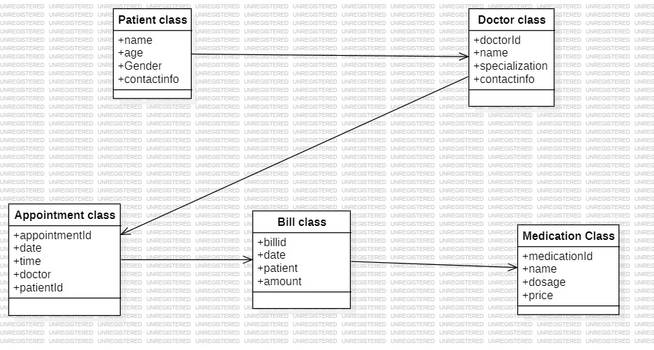 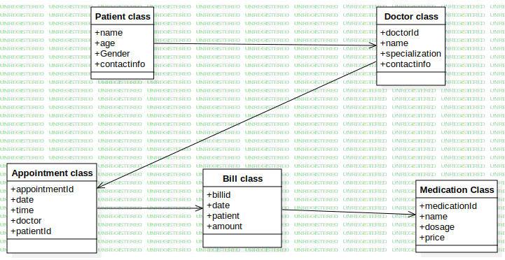
 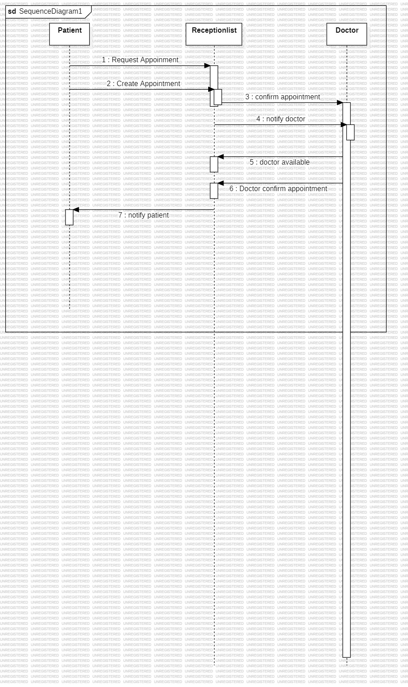
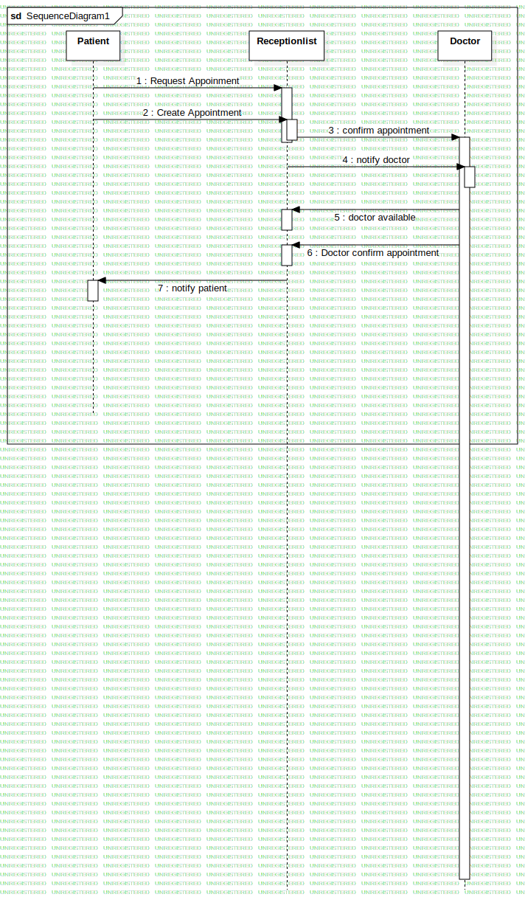
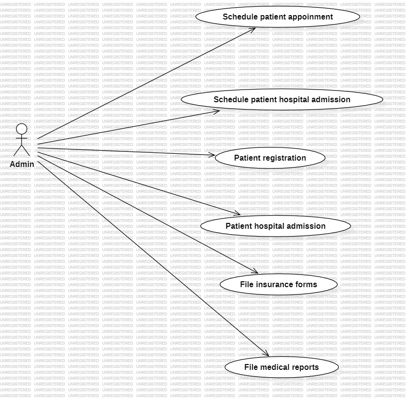
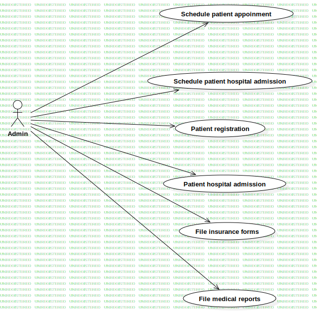
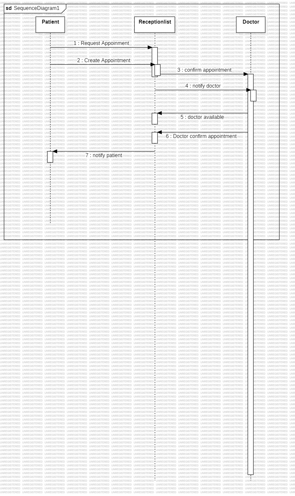
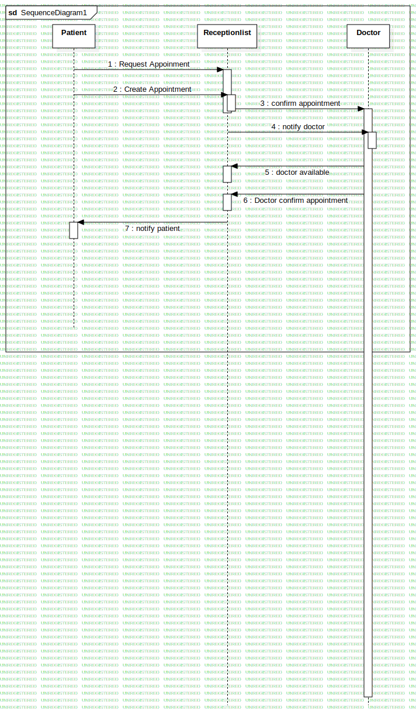
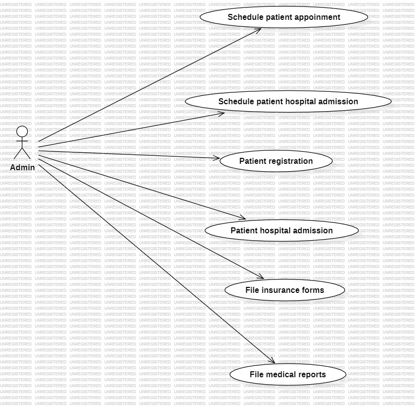
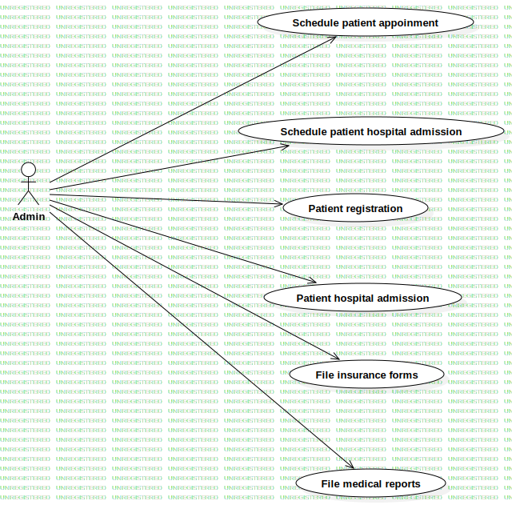
 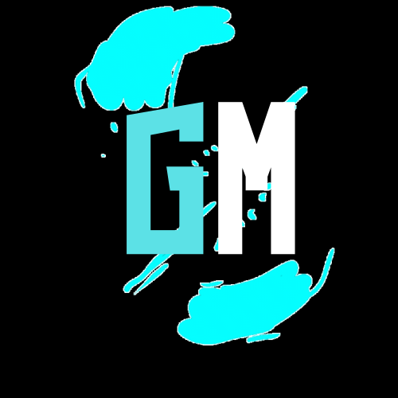
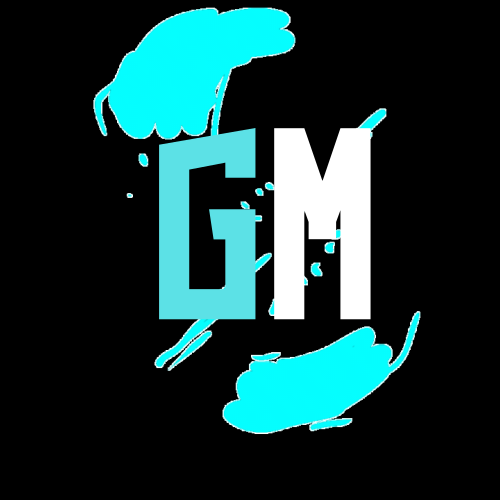
Benjamin Kirby "Ben" Tennyson:
Ben is a cocky, immature boy, who is not above enjoying attention and enjoys making jokes even during fights. Though his immaturity makes a bad impression on some people, Ben is good-hearted, noble and loyal, and his actions are motivated above all by a strong and sincere will to help and save others in need. He will stop at nothing to protect his family or anyone in danger whether human or alien. Ben proves to be resourceful, intelligent (Ben has been known to have an eidetic memory), shrewd and cunning when needed, which saved him from many situations, especially when the Omnitrix cannot activate or doesn't provide him with the alien he originally wanted.
Gwendolyn "Gwen" Tennyson:
She is depicted as a kind and intelligent girl, very skilled with computers and possessing a level of martial arts skills. She is also very independent but is very organized, sometimes to the point of compulsive, but can be a light-hearted schemer. Overall, her most notable skill is her innate, if latent, ability at magic. She got her powers from her alien grandmother, Verdona Tennyson. She is extremely skilled at magic as in "Tough Luck" when she picks up Hex's staff to defeat Charmcaster, Charmcaster replies that it can only be worked in the hands of a master magician and Gwen could still fire a yellow energy beam from it, even though she hadn't learned about them.
Grandpa Maxwell "Max" Tennyson:
Max mentions having spent his childhood summers on his Uncle Jedediah's farm, where he learned about the merits of hard work. A "not-quite-all-there" Max, under the effects of Zombozo's happiness draining, mentions having been afraid of heights as a kid and then, when "enough was enough", Max "climbed up to the top of the water tower" and "scared the fear" right out of him. It was shown that Max had a childhood friend called Donovan Grand Smith, who sums up Max: "growing up he always was the worrywart never the risk-taker", like himself. Thirty years earlier, Donovan and Max had both been broke when Donovan offered Max a business opportunity which he turned down. Max later became a Plumber (Donovan thought Max was an actual plumber), establishing that Max's career as a Plumber lasted for about twenty-eight years before he retired (Max mentioned that after twenty-eight years on the job, he'd never figured out who was behind the Bermuda Triangle). It was revealed that Max had been an astronaut and would have been the first man on the moon, but left the program before the Apollo Moon mission. In his own words, Max said he just "took his step for mankind in other ways".
Kevin Ethan Levin:
Kevin Ethan Levin is an Osmosian, a mutant subspecies of human, who first appeared as one of Ben's enemies but reformed as his best friend and Gwen's love interest.